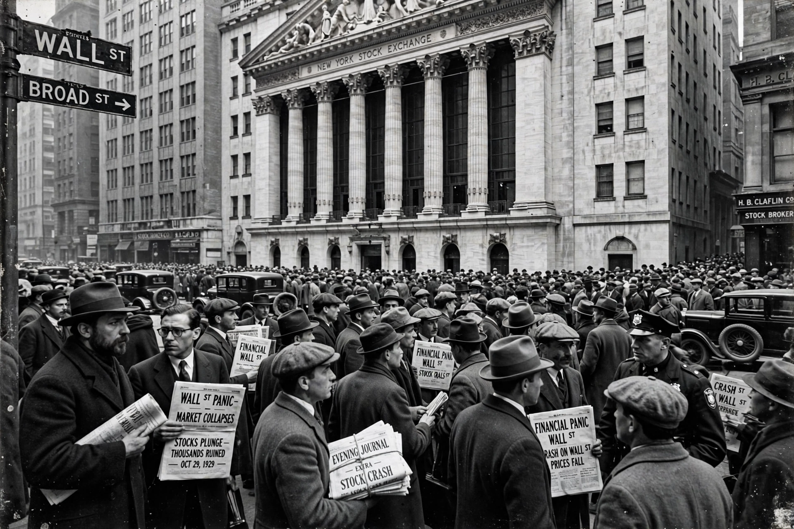

From Wikipedia, the free encyclopedia
| Black Thursday | |
|---|---|
 Crowds on Wall Street, October 24, 1929 | |
| Date | October 24, 1929 |
| Event | First major panic day of the Wall Street Crash of 1929 |
| Shares traded | Nearly 13 million (record) |
Black Thursday is the name given to Thursday, October 24, 1929, the first day of the panic that became the Wall Street Crash of 1929. Stock prices on the New York Stock Exchange, which had been sliding since their September peak, collapsed in a torrent of selling; nearly 13 million shares changed hands, overwhelming the ticker tape system, which ran hours behind. It was followed by Black Monday (October 28) and Black Tuesday (October 29), when the market's decline became a rout widely regarded as the opening act of the Great Depression.
The market opened sharply lower and fell steeply through the morning as margin calls forced waves of liquidation. Around midday, a consortium of leading bankers — including Thomas W. Lamont of J.P. Morgan, Charles E. Mitchell of National City Bank, and Albert Wiggin of Chase — pooled resources to support prices. Richard Whitney, vice president of the Exchange, famously strode onto the floor and placed a bid for U.S. Steel above the market, temporarily stemming the panic; the market recovered much of its loss by the close. The reprieve proved short-lived.
The following Monday and Tuesday saw even heavier losses, erasing tens of billions of dollars in paper wealth and triggering bank failures and a contraction of credit that spread worldwide. The crash and the subsequent depression reshaped financial regulation, leading in the United States to the Securities Act of 1933, the Glass–Steagall Act, and the creation of the Securities and Exchange Commission.